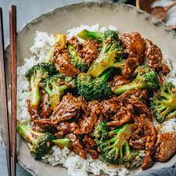

Beef and Broccoli

You cant eat BBQ chicken every day. lets mix it up with some asian sturfry kinda thing
Ingredients
- The cheapest cuts of meat you can find
- Broccoli
- Rice
- soy sauce
- teriyaki sauce
- Whatever seasonings you want but absoulutly add ginger
- I look to cook my rice in chicken broth so that optional
Instructions
- Put your rice in the instant pot with your chicken broth and cook that with the rice setting
- If your meat isnt already sliced go ahead and do that now
- Throw your meat into your wok with all the sauces and seasonings you want
- when your beef is almost completly cooked throw your broccoli in with it.
- When your broccoli is finished the rice should also be done
- Feast